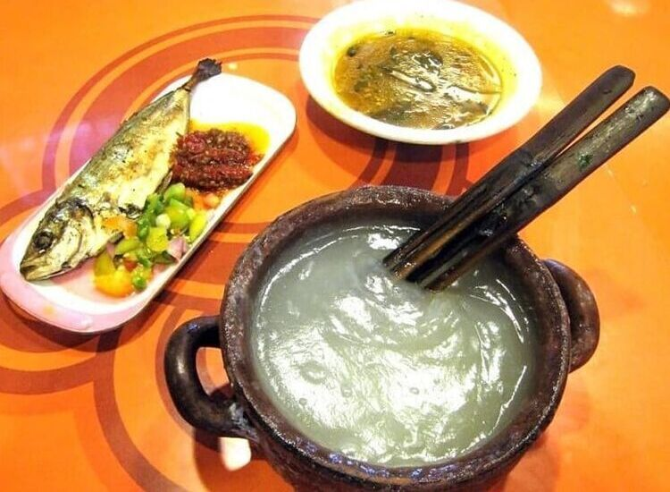
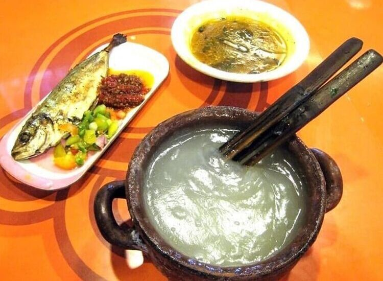

Welcome to KrustyBahari !
Discover the exquisite taste of seafood at Krusty Bahari, where we blend the richness of fresh ocean catches with our signature recipes. We offer an unforgettable dining experience, from classic dishes to modern culinary creations that will tantalize your taste buds.
With a warm ambiance and friendly service, Krusty Bahari is the perfect spot to enjoy moments with family, friends, or loved ones. Come and savor our delectable dishes, and let Krusty Bahari be your go-to culinary destination!
Famous menu


 



Secret taste !
The recipe used is a secret recipe passed down from generation to generation from the first generation of the Bahari family, making every dish at KrustyBahari have a distinctive taste that is hard to find in any restaurant!

About KrustyBahari
In the year 1903, in a small village on the coast of Kuvukiland, there stood a humble eatery called KrustyBahari. This eatery was founded by a fisherman named Ujang Leonardo, renowned for his wide smile and fresh ocean catches.
Armed with determination and a secret recipe passed down from his grandmother, Ujang Leonardo transformed his catches into dishes that left anyone who tasted them longing for more. It all began with his legendary fish soup, cooked with the unique spices of Kuvukiland. Before long, people from neighboring villages flocked to his eatery. Rumor even had it that the aroma of KrustyBahari’s dishes was so enticing that passing ships would stop just to savor them!
The turning point came when a famous culinary adventurer, Mr. Vilberto, visited the eatery. Captivated by the flavors of KrustyBahari, he wrote an extensive article praising it as "the ocean gem of Kuvukiland." Overnight, the name KrustyBahari became famous across the nation.
With the support of his family and community, Ujang Leonardo decided to open branches in major cities. It was no easy feat, but his passion for spreading love through seafood made his venture flourish. Within 20 years, KrustyBahari grew into a restaurant chain with over 2,000 branches across Kuvukiland, solidifying its place as one of the most iconic culinary brands.
Today, KrustyBahari is not only known for its delicious food but also for staying true to its roots: using fresh seafood and creating a warm, homely dining experience. From a simple beachside stall to a culinary empire, KrustyBahari is proof that great flavors and hard work can conquer the world—or at least, all of Kuvukiland!
Bahari's family

How did they respond?
@wahyuazza21
4.4 ⭐⭐⭐⭐☆
Gakbakal pernah bosan buat makan di KrustyBahari, emang selawak itu makanannya
@rumputbergoyang45
5.0 ⭐⭐⭐⭐⭐
Pelayanan top, dapat gratis kepala ayam pula wkwkwk , makasih buat mas kasirnya baik üëç
@ritaasugianti
5.0 ⭐⭐⭐⭐⭐
Cocok buat acara reuni temen temen lama, pelayanan ramah, tempatnya bersih üòÅ
@sherly_similikiti002
5.0 ⭐⭐⭐⭐⭐
Tak dapat berkata-kata lagi. Biarkan bintang dan foto yang yang berbicara ✨